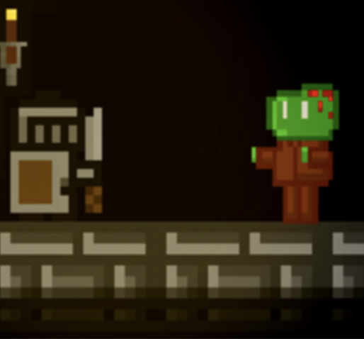

Pseudocode Interpreter
A simple interpreter that can process CIE A-Level Psuedocode commands. Currently can store 1D arrays and variables and can perform initialisation, selection and iteration.
Pseudocode Interpreter
A simple interpreter that can process CIE A-Level Psuedocode commands. Currently can store 1D arrays and variables and can perform initialisation, selection and iteration.
Dungeon Game
A simple platformer game surrounding a knight who fights his way through multiple levels and a boss to reach a crown (the end objective). The player has to fight off zombies, archers and jump his way across traps and lava.
Research Project on Semiconductors
I did this project to review the main materials used in semiconductors over the past century and highlight the reasons why Silicon is used instead of Germanium. I also discussed the possibility of Germanium returning with new technologies being discovered.
Raspberry Pi Security Camera
A security camera that records 15 seconds of footage after motion is detected, saves the video locally and alerts me with an email.
Raspberry Pi Weather Station
A weather station that logs temperature, pressure and humidity using a Python program and displays it onto a locally hosted website hosted by the Raspberry Pi.
3D Art
I had done many 3D models using blender. I've made cars, landscapes, characters and used these skills in an internship with a complany where I designed and animated their mascot.